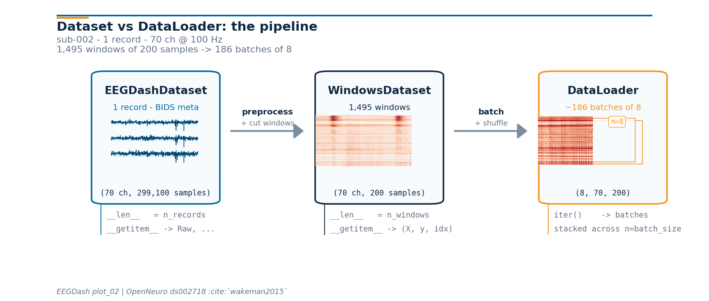

Note
Go to the end to download the full example code or to run this example in your browser via Binder.
EEG recording to PyTorch DataLoader#
Difficulty 1 | Runtime: 2m | Compute: CPU
A model trains on tensor batches, not on continuous voltage traces. This
tutorial closes the gap on one BIDS recording from OpenNeuro ds002718 [Wakeman and Henson, 2015], reachable
through NEMAR [Delorme et al., 2022]: two safe
preprocessors, a fixed-length window step, a DataLoader [Paszke et al., 2019], and an optional
Zarr cache that turns batch reads into a few milliseconds of random
access. We do not train a model. The deliverable is one batch’s
shape and dtype.
Keywords: loading, PyTorch, DataLoader
Learning objectives#
Chain
EEGDashDataset,braindecode.preprocessing.preprocess(), andcreate_fixed_length_windows()on one subject.Predict the shape of one window from
(n_channels, window_seconds * sfreq)and verify it.Read one batch from
torch.utils.data.DataLoaderand explain each axis.Convert the windowed dataset to a Zarr store and re-read it for random-access speed.
Pick safe values for
batch_size,num_workers,pin_memory, andshufflefor an EEG workload.
Requirements#
About 2 min on CPU on first run; under 20 s once cached.
Network on first call (~30-60 MB into
cache_dir); offline thereafter.Prerequisites: Find datasets with the EEGDash API (catalogue), Load one EEG recording (one
Raw).Concept: EEGDash objects: EEGDash, EEGDashDataset, EEGChallengeDataset.
Setup. np.random.seed and torch.manual_seed make shuffle=True
and any model init reproducible across runs (E3.21).
import os
from pathlib import Path
import matplotlib.pyplot as plt
import numpy as np
import pandas as pd
import torch
from torch.utils.data import DataLoader
import braindecode
import eegdash
from braindecode.preprocessing import (
Preprocessor,
create_fixed_length_windows,
preprocess,
)
from eegdash import EEGDashDataset
from eegdash.viz import use_eegdash_style
use_eegdash_style()
SEED = 42
np.random.seed(SEED)
torch.manual_seed(SEED)
CACHE_DIR = Path(os.environ.get("EEGDASH_CACHE_DIR", Path.home() / ".eegdash_cache"))
CACHE_DIR.mkdir(parents=True, exist_ok=True)
print(
f"eegdash {eegdash.__version__}; braindecode {braindecode.__version__}; "
f"torch {torch.__version__}"
)
print(f"cache_dir={CACHE_DIR}")
eegdash 0.7.2; braindecode 1.5.1; torch 2.12.0+cu130
cache_dir=/home/runner/eegdash_cache
Dataset vs DataLoader: the mental model#
PyTorch’s official tutorial draws the line clearly: a
Dataset owns sample storage and retrieval
(__len__ and __getitem__); a
DataLoader consumes the dataset and adds
batching, shuffling, and worker orchestration. The DataLoader is not a
data store. It is an iterable that calls __getitem__ on the
dataset behind it and stacks the results.
On EEG, the picture has three shapes you can keep in your head:
EEGDashDataset WindowsDataset DataLoader
(records + BIDS meta) (cut samples for the model) (consumer)
┌────────────────────┐ ┌───────────────────┐ ┌────────────┐
│ record 0 (Raw) ──┐ │ preproc │ window 0 (X, y) │ batch + │ batch 0 │
│ record 1 (Raw) ──┼─┼─────────▶│ window 1 (X, y) │ shuffle │ batch 1 │
│ record 2 (Raw) ──┘ │ + cut │ ... │────────▶│ ... │
│ ... │ windows │ window N (X, y) │ │ batch K │
└────────────────────┘ └───────────────────┘ └────────────┘
__len__ = n_records __len__ = n_windows iter() yields
__getitem__ -> (raw, ...) __getitem__ -> (X, y, idx) stacked tensors
Once the pipeline runs, we re-draw this diagram further down with the live shapes that came out of the runtime.
Five corollaries#
A sample is a window, not a recording. Continuous EEG is one long array per session. Models train on fixed-length frames, so the pipeline cuts each
Rawinto(n_channels, window_samples)tensors before any batching happens.Pipeline composition.
EEGDashDataset(records and BIDS metadata) feedspreprocess()(in-place edits on eachmne.io.Raw) which feedscreate_fixed_length_windows()(continuous, then windowed) which feedsDataLoader(windowed, then batched). Each stage carries the BIDS metadata forward, which keeps later splits subject-aware (see Split EEG without subject leakage).Two windowing surfaces.
create_fixed_length_windows()strides across the continuous signal, ignoring events; useful for self-supervised pretraining and sleep staging.create_windows_from_events()cuts around BIDS event onsets with explicit offsets; this is the right choice for ERP and event-related tasks (face/scrambled, oddball, motor imagery). Both return aBaseConcatDatasetofWindowsDatasetand slot into the same DataLoader without any code change.Random access vs sequential storage. Training shuffles windows; the underlying signal store has to support cheap
X[i]lookups..fifis fine for one recording but its random-access cost grows linearly with file size; Zarr stores fixed-size chunks and reads any window in tens of milliseconds (see Step 5).Lazy by default. Building the dataset queries the metadata index. The MNE
Rawis materialised on demand (record.raw).preload=Trueon the windowing helpers forces the cut signal into RAM, which is the right trade-off when the recording fits in memory.Connections back and forward.
plot_01opened the same record and inspected the spectrum.plot_10covers the full preprocessing recipe (montage, reference, band-pass) we keep minimal here.plot_11splits without leakage.plot_13saves and reloads the prepared windows so subsequent sessions skip the cut.
What can a windowed dataset do?#
Before building one, list the methods
braindecode.datasets.WindowsDataset exposes; most of them are
the verbs a DataLoader implicitly relies on (__len__,
__getitem__, set_description, transform).
from braindecode.datasets import WindowsDataset
windows_methods = sorted(
name
for name in dir(WindowsDataset)
if not name.startswith("_") and callable(getattr(WindowsDataset, name, None))
)
pd.DataFrame({"method": windows_methods}).head(20)
Step 1: Build the dataset (lazy)#
Same idiom as plot_01. One subject keeps the run inside the
tutorial budget; the BIDS query language carries through unchanged
[Pernet et al., 2019].
DATASET = "ds002718"
SUBJECT = "002" # E3.23 data minimality: one subject, one task
TASK = "FaceRecognition"
dataset = EEGDashDataset(
cache_dir=CACHE_DIR, dataset=DATASET, subject=SUBJECT, task=TASK
)
record = dataset.datasets[0]
raw = record.raw
pd.Series(
{
"n_recordings": len(dataset.datasets),
"n_channels": raw.info["nchan"],
"sfreq (Hz)": float(raw.info["sfreq"]),
"duration (s)": round(raw.times[-1], 1),
},
name="value",
).to_frame()
Downloading sub-002_task-FaceRecognition_channels.tsv: 0%| | 0.00/1.31k [00:00<?, ?B/s]
Downloading sub-002_task-FaceRecognition_channels.tsv: 100%|██████████| 1.31k/1.31k [00:00<00:00, 5.80MB/s]
Downloading sub-002_task-FaceRecognition_events.tsv: 0%| | 0.00/105k [00:00<?, ?B/s]
Downloading sub-002_task-FaceRecognition_events.tsv: 100%|██████████| 105k/105k [00:00<00:00, 56.5MB/s]
Downloading sub-002_task-FaceRecognition_electrodes.tsv: 0%| | 0.00/1.68k [00:00<?, ?B/s]
Downloading sub-002_task-FaceRecognition_electrodes.tsv: 100%|██████████| 1.68k/1.68k [00:00<00:00, 8.08MB/s]
Downloading sub-002_task-FaceRecognition_eeg.json: 0%| | 0.00/1.28k [00:00<?, ?B/s]
Downloading sub-002_task-FaceRecognition_eeg.json: 100%|██████████| 1.28k/1.28k [00:00<00:00, 5.30MB/s]
Downloading sub-002_task-FaceRecognition_coordsystem.json: 0%| | 0.00/283 [00:00<?, ?B/s]
Downloading sub-002_task-FaceRecognition_coordsystem.json: 100%|██████████| 283/283 [00:00<00:00, 1.38MB/s]
[05/22/26 21:24:33] WARNING File not found on S3, skipping: downloader.py:163
s3://openneuro.org/ds002718/sub-0
02/eeg/sub-002_task-FaceRecogniti
on_eeg.fdt
Downloading sub-002_task-FaceRecognition_eeg.set: 0%| | 0.00/224M [00:00<?, ?B/s]
Downloading sub-002_task-FaceRecognition_eeg.set: 22%|██▏ | 50.0M/224M [00:01<00:06, 29.6MB/s]
Downloading sub-002_task-FaceRecognition_eeg.set: 100%|██████████| 224M/224M [00:01<00:00, 129MB/s]
Step 2: Two safe preprocessors#
Predict. What does raw.info['sfreq'] look like after a
100 Hz resample? And len(raw.ch_names) after dropping non-EEG
channels?
Run. pick_types(eeg=True) keeps only EEG, resample(sfreq=100)
downsamples. Filter and reference live in plot_10; here we keep
the recipe to two named steps so the focus stays on the
Raw -> windows -> DataLoader plumbing.
TARGET_SFREQ = 100 # Hz
preprocess(
dataset,
[
Preprocessor("pick_types", eeg=True, eog=False, misc=False),
Preprocessor("resample", sfreq=TARGET_SFREQ),
],
)
raw_pp = dataset.datasets[0].raw
n_channels = len(raw_pp.ch_names)
sfreq = float(raw_pp.info["sfreq"])
pd.Series(
{
"n_channels": n_channels,
"sfreq (Hz)": sfreq,
"dtype": str(raw_pp.get_data().dtype),
},
name="value",
).to_frame()
/home/runner/work/EEGDash/EEGDash/.venv/lib/python3.12/site-packages/braindecode/preprocessing/preprocess.py:78: UserWarning: apply_on_array can only be True if fn is a callable function. Automatically correcting to apply_on_array=False.
warn(
NOTE: pick_types() is a legacy function. New code should use inst.pick(...).
Step 3: Cut into fixed-length windows#
Two parameters drive every shape from here on: window size and stride.
window_size_samples = window_seconds * sfreq.window_stride_samples = window_size_samplesgives 0 % overlap; each input sample lands in exactly one window.Halving the stride doubles the window count and introduces correlated frames inside one recording, which usually hurts evaluation unless the splits below stay subject-aware (cross-subject in
plot_11).
Predict. len(windows) for a 1-second recording at 100 Hz with
2-second windows? (Answer: zero, after drop_last_window=True.)
WINDOW_SECONDS = 2.0
window_size_samples = int(WINDOW_SECONDS * TARGET_SFREQ)
windows = create_fixed_length_windows(
dataset,
window_size_samples=window_size_samples,
window_stride_samples=window_size_samples, # 0 % overlap
drop_last_window=True,
preload=True,
)
X_one, y_one, _idx = windows[0]
pd.Series(
{
"n_windows": len(windows),
"windows[0][0].shape": str(tuple(X_one.shape)),
"X.dtype": str(X_one.dtype),
"window_samples": window_size_samples,
"window_seconds": WINDOW_SECONDS,
},
name="value",
).to_frame()
Step 4: Wrap in a DataLoader#
Four knobs matter on EEG; every other DataLoader argument can stay
at default until the model trains.
batch_size. 8-32 is a comfortable starting range for a CPU debug run; final-training values are dictated by GPU memory.shuffle.Truefor training,Falsefor evaluation.Truerequires a seededtorch.Generatorif the first batch must match across runs.num_workers.0(synchronous) is the right default withpreload=Truebecause windows already live in RAM.>0helps only when the dataset reads from disk per__getitem__(the Zarr path below).pin_memory. Set toTrueif a CUDA device is present and you plan to send batches with.to(device, non_blocking=True).
BATCH_SIZE = 8
gen = torch.Generator().manual_seed(SEED)
loader = DataLoader(
windows,
batch_size=BATCH_SIZE,
shuffle=True,
num_workers=0,
pin_memory=torch.cuda.is_available(),
generator=gen,
)
X_batch, y_batch, _idx_batch = next(iter(loader))
pd.Series(
{
"X.shape": str(tuple(X_batch.shape)),
"X.dtype": str(X_batch.dtype),
"y.shape": str(tuple(y_batch.shape)),
"y unique": str(torch.unique(y_batch).tolist()),
"pin_memory": loader.pin_memory,
"num_workers": loader.num_workers,
},
name="value",
).to_frame()
Investigate. The batch tensor is shaped
(batch_size, n_channels, window_size_samples) with floating-point
dtype. That is exactly what Braindecode models such as
ShallowFBCSPNet and
EEGNetv4 consume.
Pipeline at a glance: the live shapes#
Now that every stage has run, we can re-draw the mental-model diagram from the top with the actual numbers the runtime produced. The drawing helpers live in a sibling _pipeline_diagram module so the rendering plumbing stays out of this tutorial; the call below is the only line that matters.
from _pipeline_diagram import draw_pipeline
fig_pipe = draw_pipeline(
record_signal=raw_pp.get_data(picks="eeg").copy(),
window_xy=np.asarray(windows[0][0]).copy(),
batch_xy=np.asarray(X_batch[0]).copy(),
n_records=len(windows.datasets),
n_channels=n_channels,
sfreq=sfreq,
window_size_samples=window_size_samples,
batch_size=BATCH_SIZE,
n_windows=len(windows),
subject=SUBJECT,
n_channels_full=raw_pp.info["nchan"],
)
plt.show()

Reproducibility: which random source draws which window?#
Two seeds and one Generator cover the failure modes that bite EEG
pipelines.
np.random.seedandtorch.manual_seedmake the main process deterministic: model init, baselineshuffle=Trueordering whennum_workers=0, and any NumPy use inside the dataset’s__getitem__.A
torch.Generatorpassed to the DataLoader fixes the sampling order. Without it, twoshuffle=Trueruns see different windows in the first batch.torch.manual_seedalone is not enough because PyTorch advances the global generator from any other operation that touches it.With
num_workers > 0, each worker forks the parent state. NumPy does not re-seed automatically (PyTorch does, with a deterministic per-worker seed). The canonical fix is theseed_worker(worker_id)template below; this is what PyTorch’s own reproducibility guide recommends.
import random
def seed_worker(worker_id):
"""Re-seed numpy and stdlib random in each DataLoader worker."""
worker_seed = torch.initial_seed() % 2**32
np.random.seed(worker_seed)
random.seed(worker_seed)
loader_repro = DataLoader(
windows,
batch_size=BATCH_SIZE,
shuffle=True,
num_workers=0, # set >0 once the dataset reads from disk per __getitem__
pin_memory=torch.cuda.is_available(),
worker_init_fn=seed_worker,
generator=torch.Generator().manual_seed(SEED),
)
def _first_batch_indices(loader):
"""Return the per-window i_start indices of the first batch as a list."""
_, _, idx_batch = next(iter(loader))
arr = np.asarray(idx_batch)
if arr.ndim >= 2:
return arr[:, 1].tolist() # i_start_in_trial column
return list(arr)
first_idx_a = _first_batch_indices(loader_repro)
first_idx_b = _first_batch_indices(
DataLoader(
windows,
batch_size=BATCH_SIZE,
shuffle=True,
num_workers=0,
worker_init_fn=seed_worker,
generator=torch.Generator().manual_seed(SEED),
)
)
pd.Series(
{
"first batch indices (run A)": str(first_idx_a),
"first batch indices (run B)": str(first_idx_b),
"match?": first_idx_a == first_idx_b,
},
name="value",
).to_frame()
Step 5: Unlock random-access speed with Zarr#
preload=True keeps windows in RAM, which is the right answer for
a tutorial. For real training the dataset rarely fits in memory, and
.fif files become the bottleneck (sequential format, one recording
per file, no chunked random access). Braindecode’s solution is a
Zarr store: fixed-size chunks, Blosc compression, and an
__getitem__ that reads one window in tens of milliseconds even
when the full dataset is hundreds of GB.
The conversion is the same code path that
push_to_hub() runs
locally before the Hub upload; we use it offline here. Run this
section once per project: subsequent loads pay the chunk-decode cost
only, not the recompute cost. The reload returns the same
BaseConcatDataset API so the DataLoader code above is unchanged.
Note
Zarr is an optional Braindecode extra. Install it once into the same environment:
pip install braindecode[hub]
# Convert windows to a Zarr-backed cache (one-time, ~seconds for
# one recording, scales linearly with dataset size):
from braindecode.datasets import BaseConcatDataset
zarr_dir = CACHE_DIR / "ds002718_windows.zarr"
windows.push_to_hub(
repo_id="local-only/ds002718-windows",
local_cache_dir=zarr_dir,
compression="blosc", # blosc > zstd > gzip for random reads
compression_level=5, # 5 is the documented sweet spot
chunk_size=5_000_000, # samples per chunk; one chunk = one read
token=None,
)
# Reload as a BaseConcatDataset; the DataLoader API is unchanged.
windows_zarr = BaseConcatDataset.pull_from_hub(
repo_id="local-only/ds002718-windows",
cache_dir=zarr_dir,
preload=False, # lazy reads from chunks
)
Trade-offs. Blosc beats Zstd and Gzip on random-read latency at the
cost of larger files. chunk_size tunes the read amplification: a
small chunk reads quickly but pays per-chunk metadata overhead; a
large chunk amortises that cost but reads more bytes than the model
asked for. The default of 5 M samples is conservative for one-second
windows at 100 Hz. With Zarr in place,
DataLoader(num_workers=4, pin_memory=True) becomes the right
default rather than an over-eager guess.
A common mistake, and how to recover#
Run. Asking for windows larger than the recording silently returns
zero. We trigger it on purpose so the failure mode is visible
[Nederbragt et al., 2020]: a DataLoader(empty) quietly yields
nothing, which masks the bug.
huge = int(raw_pp.times[-1] * TARGET_SFREQ * 10) # 10x recording length
try:
bad = create_fixed_length_windows(
dataset,
window_size_samples=huge,
window_stride_samples=huge,
drop_last_window=True,
preload=True,
)
print(f"Oversize window produced len={len(bad)} (expected 0).")
except (ValueError, RuntimeError) as exc:
print(f"Caught {type(exc).__name__}: {str(exc)[:120]}")
print(f"Recovery: keep window_size_samples={window_size_samples} (<< recording).")
Caught ValueError: Window size 2990990 exceeds trial duration 299100.
Recovery: keep window_size_samples=200 (<< recording).
Modify#
Your turn. Set WINDOW_SECONDS = 4.0 and rerun Step 3 + Step 4.
Predict before running: how should windows[0][0].shape[1] change?
How should len(windows) change?
Make#
Mini-project. Write a custom collate_fn that returns a dict
instead of the default tuple. Dict batches stay readable when the
pipeline grows beyond (X, y, idx): HuggingFace Trainer,
Lightning LightningDataModule, and any code that calls
model(**batch) expects keyword inputs, and dict keys document the
tensor’s role at the call site rather than relying on positional
convention.
def dict_collate(batch):
"""Stack a list of ``(X, y, idx)`` items into a keyed batch dict."""
return {
"signal": torch.stack(
[torch.as_tensor(item[0], dtype=torch.float32) for item in batch], dim=0
),
"target": torch.as_tensor([item[1] for item in batch]),
"index": torch.as_tensor(
[
int(item[2][0])
if isinstance(item[2], (list, tuple, np.ndarray))
else int(item[2])
for item in batch
]
),
}
loader_dict = DataLoader(
windows,
batch_size=BATCH_SIZE,
shuffle=False,
num_workers=0,
collate_fn=dict_collate,
)
batch = next(iter(loader_dict))
pd.Series(
{
"type(batch)": type(batch).__name__,
"keys": str(sorted(batch.keys())),
"signal.shape": str(tuple(batch["signal"].shape)),
"signal.dtype": str(batch["signal"].dtype),
"target.shape": str(tuple(batch["target"].shape)),
"index.shape": str(tuple(batch["index"].shape)),
},
name="value",
).to_frame()
Investigate. model(**batch) now passes signal=...,
target=..., index=... as keyword arguments. That matches the
convention used by HuggingFace Trainer and PyTorch Lightning data
modules without any glue code.
Continuous windows vs event-based epochs#
Underneath every WindowsDataset sits
an mne.Epochs (or mne.EpochsArray) object: a 3-D
array shaped (n_epochs, n_channels, n_times) plus an event_id
dict that maps condition strings to integer codes ({'face': 1,
'scrambled': 2}) and an optional metadata pandas.DataFrame
that lets you write trial-level filters such as
epochs[epochs.metadata.task == 'face']. Raw is one continuous
array; Epochs is already cut, with its own event_id /
metadata / drop_bad machinery [Gramfort et al., 2013].
Two functions take you from Raw to that shape; the DataLoader
does not care which one ran.
create_fixed_length_windows()strides over the continuous signal and labels every window with the same description-derived target. Right call for self-supervised pretraining (no event labels needed), sleep staging (one stage per 30 s window), and monitoring tasks where the recording is labelled at the session level.create_windows_from_events()readsmne.io.Raw.annotations(BIDSevents.tsvis loaded automatically by EEGDash), pulls a window of fixed length around each event onset usingtrial_start_offset_samples/trial_stop_offset_samples, and uses the event code as the target. Right call for ERP and event-related decoding (face vs scrambled inds002718, P300 oddball, motor imagery cues). Passmapping={'face': 0, 'scrambled': 1}to relabel at construction time without touching the underlying epochs object.
The DataLoader code from Step 4 is byte-identical in both cases. Switching is one line in the windowing call.
Changing the label without rebuilding the windows#
The most-missed edit: the target in
WindowsDataset is a column called
"target" on a per-record pandas.DataFrame (the
mne.Epochs metadata). __getitem__ reads
self.y[index], which was populated from that column at
construction. Three patterns cover the practical cases.
Pattern 0: use a BIDS field as the target. EEGDash pushes BIDS
entities (subject, task, session, run, age,
gender, sex, plus any participants.tsv extras) onto each
record’s description at
dataset construction. The braindecode windowing step then folds those
values into braindecode.datasets.BaseConcatDataset.get_metadata()
(one row per window), so picking a column out of that DataFrame is the
whole adapter — y = metadata[col].to_numpy() is what feeds MOABB
stratified splitters.
Pattern 1: relabel in place. Mutate the metadata column and the
parallel y list on every per-record subdataset. Lasts for the
Python session; no preprocessing rerun. Right call when the target
is computed from the windows themselves (a sliding-window stage label
the BIDS sidecar does not carry).
Pattern 2: map at construction time (event-based windows). Pass
mapping={'face': 0, 'scrambled': 1} to
create_windows_from_events(). The
integer codes land in metadata['target'] directly.
Pattern 0: read BIDS fields as a target without any mutation.
windows.get_metadata() is the braindecode adapter: one row per
window, with the per-record description columns merged in. Picking
a column gives the per-window target.
metadata = windows.get_metadata()
y_subject = metadata["subject"].to_numpy()
pd.Series(
{
"rows in metadata": len(metadata),
"task unique": str(metadata["task"].unique().tolist()),
"subject unique": str(metadata["subject"].unique().tolist()),
"y_subject dtype": str(y_subject.dtype),
"windows.datasets[0].description['task']": str(
windows.datasets[0].description.get("task")
),
},
name="value",
).to_frame()
Investigate. Every window inherited the recording’s
task / subject from the BIDS-merged description without
touching windows.datasets[i].metadata['target']. The same call
with target="age" would expose the participants.tsv age column;
with target="group" (when present) it would expose the clinical
group label. This is what
Split EEG without subject leakage
leans on for subject-aware MOABB splits.
Pattern 1: relabel in place#
Right call when the label cannot come from a BIDS field on the description: a self-supervised pretext label, a sliding-window stage tag, or a teacher-model output.
Pattern 1: relabel one recording in place. First half gets label 0,
second half label 1. The DataLoader picks up the new targets without
any rebuild, and windows.get_metadata()['target'] would now
return these mutated values.
sub_ds = windows.datasets[0]
n = len(sub_ds)
half = n // 2
new_targets = [0] * half + [1] * (n - half)
sub_ds.y = new_targets
sub_ds.metadata.loc[:, "target"] = new_targets
loader_relabelled = DataLoader(
windows, batch_size=BATCH_SIZE, shuffle=False, num_workers=0
)
_, y_relabelled, _ = next(iter(loader_relabelled))
pd.Series(
{
"before (orig)": "all windows shared the recording-level target",
"after y": str(torch.unique(y_relabelled).tolist()),
"first 8 windows": str(new_targets[:8]),
},
name="value",
).to_frame()
Investigate. y.unique() flipped from a single value to [0,
1]. The metadata mutation is what carried the change forward; the
in-RAM Raw array is untouched and the cache file on disk is
untouched.
A common pitfall. Mutating y
without updating metadata['target'] works for read-only iteration but
breaks any downstream code (leakage-aware splits, Hub upload) that
consults the metadata frame instead of the list. Change both together.
Result#
We turned one subject of ds002718 into a reproducible PyTorch
DataLoader: BIDS query, two safe preprocessors, fixed-length
windowing, batched read. The first batch is shaped
(batch_size, n_channels, window_samples) with floating-point
dtype. A clean batch shape only confirms plumbing; signal quality and
task design are still open questions [Cisotto and Chicco, 2024].
Wrap-up#
We went from a single-record EEGDashDataset to a
DataLoader, named the four knobs that matter, and pointed at the
Zarr path that unlocks random-access speed once the project outgrows
one recording in RAM. Next:
Preprocess EEG and create windows
replaces the two safe preprocessors with the full montage / reference
/ filter / resample recipe;
Split EEG without subject leakage
splits the windows without leakage;
Save and reload prepared data
saves and reloads the windows so subsequent sessions skip the cut.
Try it yourself#
Re-run with
shuffle=Trueandgenerator=None: the first batch becomes non-deterministic across runs. Add the seededtorch.Generatorback and re-verify.Set
num_workers=2and confirm the batch shape is identical while wall-time changes; explain why on a 1-2-core CPU.Replace
window_stride_samples = window_size_sampleswith a 50 % overlap (window_size_samples // 2) and predict the newlen(windows). Then verify your prediction.Run the Zarr conversion code block on a local path (
repo_id="local-only/<name>"); compare random-read latency against the in-RAMDataLoader.
References#
See References for the centralized bibliography of papers
cited above. Add or amend an entry once in
docs/source/refs.bib; every tutorial inherits the update.
Total running time of the script: (0 minutes 10.527 seconds)